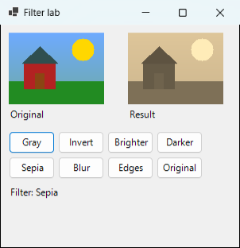
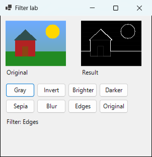

An image filter lab
A picture is a table of numbers. This lesson holds the pixels in Ring lists, writes each filter as a small function, saves the result as a BMP file written byte by byte, and shows the original and the result side by side.
What you will learn#
- a picture as rows of
[red, green, blue]numbers, - filters as functions that take a pixel (or its neighbors) and return a new one,
- why per-pixel calls across the bridge are slow, and a faster way,
- the structure of a BMP file and writing it with Ring,
- little-endian numbers,
- showing an image in a
PictureBox.
The program#
# an image filter lab - pixels as numbers, filters as small functions, a BMP file written by hand, before and after side by side
load "dotnet.ring"
using {
"System.IO"
"System.Drawing"
"System.Windows.Forms"
}
C_WIDTH = 120
C_HEIGHT = 90
oForm = ""
oBefore = ""
oAfter = ""
oInfo = ""
aSource = [] # the pixels of the original: aSource[y][x] = [red, green, blue]
aResult = []
cFolder = ""
nFile = 0
func main
oForm = uiForm("Filter lab",C_WIDTH * 2 + 60,C_HEIGHT + 190)
oBefore = uiPictureBox(oForm,10,10,C_WIDTH,C_HEIGHT)
oAfter = uiPictureBox(oForm,C_WIDTH + 40,10,C_WIDTH,C_HEIGHT)
uiLabel(oForm,"Original",10,C_HEIGHT + 14,100,20)
uiLabel(oForm,"Result",C_WIDTH + 40,C_HEIGHT + 14,100,20)
aNames = ["Gray","Invert","Brighter","Darker","Sepia","Blur","Edges","Original"]
for nIndex = 1 to len(aNames)
nColumn = (nIndex - 1) % 4
nRow = floor((nIndex - 1) / 4)
uiButton(oForm,aNames[nIndex],10 + nColumn * 62,C_HEIGHT + 44 + nRow * 32,58,28,"applyFilter('" + aNames[nIndex] + "')")
next
oInfo = uiLabel(oForm,"",10,C_HEIGHT + 112,C_WIDTH * 2 + 30,22)
cFolder = new Path().Combine([new Path().GetTempPath(),"ringdotnet_filters"])
new Directory().CreateDirectory(cFolder)
makeSource()
applyFilter("Original")
uiRun(oForm)
try
new Directory().Delete([ :path = cFolder, :recursive = True ]) # the pictures were only needed while the window was open
catch
done
# ---------------------------------------------------------------- pixels <-> Ring lists
# A picture to work on, made of numbers: a sky that gets lighter near the horizon, a sun, a hill and a house
func makeSource
aSource = []
for nY = 1 to C_HEIGHT
aRow = []
for nX = 1 to C_WIDTH
aRow + pictureColor(nX,nY)
next
aSource + aRow
next
func pictureColor nX, nY
aColor = [110,170,255 - floor(nY * 90 / C_HEIGHT)] # sky
if (nX - 94) * (nX - 94) + (nY - 22) * (nY - 22) <= 196 # sun: a circle of radius 14
aColor = [255,215,0]
ok
if nY >= 62 # grass
aColor = [34,139,34]
ok
if nX >= 20 and nX < 60 and nY >= 40 and nY < 72 # house wall
aColor = [178,34,34]
ok
if nY >= 18 and nY < 40 and fabs(nX - 40) <= (nY - 18) * 24 / 22 # roof: a triangle with its top at (40, 18)
aColor = [47,79,79]
ok
if nX >= 34 and nX < 46 and nY >= 52 and nY < 72 # door
aColor = [139,69,19]
ok
return aColor
# A BMP file is simple: a 54 byte header, then the pixels row by row, from the bottom row up, each pixel as blue, green, red.
# (A row must be a multiple of 4 bytes long: 120 pixels * 3 = 360 is.) .NET reads it with Bitmap.
func saveBmp aPixels, cFile
nSize = 54 + C_WIDTH * C_HEIGHT * 3
cData = "BM" + le32(nSize) + le32(0) + le32(54) # file header: 14 bytes
cData += le32(40) + le32(C_WIDTH) + le32(C_HEIGHT) + le16(1) + le16(24) + le32(0) # picture header: 40 bytes
cData += le32(C_WIDTH * C_HEIGHT * 3) + le32(2835) + le32(2835) + le32(0) + le32(0)
for nY = C_HEIGHT to 1 step -1
for aPixel in aPixels[nY]
cData += char(aPixel[3]) + char(aPixel[2]) + char(aPixel[1])
next
next
write(cFile,cData)
# numbers as little-endian bytes (the least significant byte first)
func le32 nValue
return char(nValue % 256) + char(floor(nValue / 256) % 256) + char(floor(nValue / 65536) % 256) + char(floor(nValue / 16777216) % 256)
func le16 nValue
return char(nValue % 256) + char(floor(nValue / 256) % 256)
# ---------------------------------------------------------------- the filters: each one makes a new list of rows from the old one
# a value kept between 0 and 255 (a color channel cannot be outside)
func clamp nValue
if nValue < 0
return 0
but nValue > 255
return 255
ok
return floor(nValue)
# apply cFunction to every pixel: the function gets [r,g,b] and returns [r,g,b]
func mapPixels aPixels, cFunction
aRows = []
for aRow in aPixels
aNew = []
for aPixel in aRow
aNew + call cFunction(aPixel)
next
aRows + aNew
next
return aRows
func grayPixel aPixel
nGray = floor(aPixel[1] * 0.299 + aPixel[2] * 0.587 + aPixel[3] * 0.114) # the eye sees green brighter than blue
return [nGray,nGray,nGray]
func invertPixel aPixel
return [255 - aPixel[1],255 - aPixel[2],255 - aPixel[3]]
func brighterPixel aPixel
return [clamp(aPixel[1] + 40),clamp(aPixel[2] + 40),clamp(aPixel[3] + 40)]
func darkerPixel aPixel
return [clamp(aPixel[1] - 40),clamp(aPixel[2] - 40),clamp(aPixel[3] - 40)]
func sepiaPixel aPixel
nRed = aPixel[1]
nGreen = aPixel[2]
nBlue = aPixel[3]
return [clamp(nRed * 0.393 + nGreen * 0.769 + nBlue * 0.189),clamp(nRed * 0.349 + nGreen * 0.686 + nBlue * 0.168),clamp(nRed * 0.272 + nGreen * 0.534 + nBlue * 0.131)]
# blur: every pixel becomes the average of itself and its 8 neighbors (at the border: only the neighbors that exist)
func blur aPixels
aRows = []
for nY = 1 to C_HEIGHT
aNew = []
for nX = 1 to C_WIDTH
nRed = 0
nGreen = 0
nBlue = 0
nCount = 0
for nDY = -1 to 1
for nDX = -1 to 1
nNY = nY + nDY
nNX = nX + nDX
if nNY >= 1 and nNY <= C_HEIGHT and nNX >= 1 and nNX <= C_WIDTH
nRed += aPixels[nNY][nNX][1]
nGreen += aPixels[nNY][nNX][2]
nBlue += aPixels[nNY][nNX][3]
nCount++
ok
next
next
aNew + [floor(nRed / nCount),floor(nGreen / nCount),floor(nBlue / nCount)]
next
aRows + aNew
next
return aRows
# edges: the difference between a pixel and its right and lower neighbor; flat areas become black, borders light
func edges aPixels
aGray = mapPixels(aPixels,"grayPixel")
aRows = []
for nY = 1 to C_HEIGHT
aNew = []
for nX = 1 to C_WIDTH
nRight = aGray[nY][min(nX + 1,C_WIDTH)][1]
nDown = aGray[min(nY + 1,C_HEIGHT)][nX][1]
nHere = aGray[nY][nX][1]
nEdge = clamp(fabs(nHere - nRight) * 4 + fabs(nHere - nDown) * 4)
aNew + [nEdge,nEdge,nEdge]
next
aRows + aNew
next
return aRows
# ---------------------------------------------------------------- the window
func applyFilter cName
switch cName
on "Gray"
aResult = mapPixels(aSource,"grayPixel")
on "Invert"
aResult = mapPixels(aSource,"invertPixel")
on "Brighter"
aResult = mapPixels(aSource,"brighterPixel")
on "Darker"
aResult = mapPixels(aSource,"darkerPixel")
on "Sepia"
aResult = mapPixels(aSource,"sepiaPixel")
on "Blur"
aResult = blur(aSource)
on "Edges"
aResult = edges(aSource)
other
aResult = aSource
off
showPixels(oBefore,aSource)
showPixels(oAfter,aResult)
oInfo.Text = "Filter: " + cName
# save the pixels as a BMP file (a new name each time: a file that is shown is locked) and give the picture box that image
func showPixels oPicture, aPixels
nFile++
cFile = new Path().Combine([cFolder,"image" + nFile + ".bmp"])
saveBmp(aPixels,cFile)
oPicture.Image = (new Bitmap).@New([ :filename = cFile ])

This program uses a generic function (dnNew) where a class cannot be used. The lesson The generic functions explains them.
How it works#
Pixels as numbers#
aSource[y][x] is [r, g, b], each from 0 to 255. The sample picture is made by pictureColor, a function that returns the color of a point: a sky that gets lighter near the horizon, a circle for the sun (a point is inside if (x − 94)² + (y − 22)² ≤ 14²), grass, a house and a roof. Everything is plain Ring, so it is fast.
Filters#
Most filters change each pixel on its own, so mapPixels applies a function to every pixel (call cFunction(aPixel)):
| Filter | Rule |
|---|---|
| Gray | 0.299 r + 0.587 g + 0.114 b — the eye sees green brighter than blue |
| Invert | 255 − value for each channel |
| Brighter / Darker | add or subtract 40, and clamp the result into 0…255 |
| Sepia | each new channel is a weighted sum of the old three |
| Blur | each pixel becomes the average of its 3 × 3 neighborhood |
| Edges | the difference between a pixel and its right and lower neighbor; where the picture is flat the difference is zero (black) |
Blur and edges look at neighbors, so they need two nested loops, and they must write into a new list: if you changed the picture in place, the next pixel would see already changed neighbors.
The slow way and the fast way#
The obvious way to show the result is Bitmap.SetPixel(x, y, color) for every pixel. Every call crosses the bridge (and creating the color is another call), so the 10,800 pixels of this small picture would take several seconds for each click. See the tutorial Speed — measure first: fewer calls win. Instead, the program builds the whole file in Ring and lets .NET load it with one call.
A BMP file#
A BMP is one of the simplest picture formats:
- a 14-byte file header (
"BM", the file size, where the pixels start), - a 40-byte picture header (width, height, 24 bits per pixel, ...),
- the pixels: row by row from the bottom row up, each pixel as blue, green, red, each row padded to a multiple of 4 bytes (120 pixels × 3 = 360 is).
Numbers in the header are little-endian: the least significant byte comes first (le32 and le16). The same idea is in the tutorial Binary files. A Ring text is a list of bytes, so char(n) builds a byte and write(file, text) writes them.
showPixels writes imageN.bmp and loads it with dnNew("Bitmap",[ :filename = cFile ]). A new name for each image is used because a loaded image keeps its file open; the folder is deleted when the window closes. The self test reads one pixel back from the picture box (the sun, red 255 and blue 0) to prove that the file was written correctly.
The checks of this program are in a separate file, selftest/ch12_filters.ring:
# the checks of ch12_filters.ring: run with ring ch12_filters.ring --selftest (the program loads this file and runs selfTest() once its window is shown)
func selfTest
applyFilter("Gray")
lGray = True
for aRow in aResult
for aPixel in aRow
if aPixel[1] != aPixel[2] or aPixel[2] != aPixel[3]
lGray = False
ok
next
next
dnAssert("gray: red, green and blue are equal",lGray,True)
applyFilter("Invert")
dnAssert("invert: the sky red channel",aResult[1][1][1],255 - aSource[1][1][1])
applyFilter("Brighter")
dnAssert("brighter never goes over 255",clamp(250 + 40),255)
dnAssert("the white sun cannot get brighter",aResult[1][1][3] <= 255,True)
applyFilter("Blur")
dnAssert("blur keeps the size",len(aResult) = C_HEIGHT and len(aResult[1]) = C_WIDTH,True)
applyFilter("Edges")
dnAssert("a flat area has no edge",aResult[85][5][1],0)
dnAssert("the house wall has an edge",aResult[60][20][1] > 0 or aResult[60][19][1] > 0,True)
applyFilter("Original")
dnAssert("original is unchanged",aResult[1][1][1],aSource[1][1][1])
dnAssert("the picture box shows a bitmap of the right size",oAfter.Image.Width = C_WIDTH and oAfter.Image.Height = C_HEIGHT,True)
oColor = oAfter.Image.GetPixel(94,22)
dnAssert("the sun was written to the file correctly (red)",oColor.R,255)
dnAssert("the sun was written to the file correctly (blue)",oColor.B,0)Try the same with uiPictureBox and a photo of your own: load it with Bitmap, read the pixels once into lists, and use the filters from this tutorial. Reading one pixel at a time is slow, so keep photos small, or look at LockBits for fast access.
What you learned#
- pixels as numbers and filters as functions,
- 3 × 3 neighborhoods and writing to a new list,
- clamping,
- writing a BMP file and little-endian numbers,
- avoiding thousands of bridge calls.
Exercises#
- Add a Threshold filter: black below 128 gray, white above.
- Add a Mirror filter that reverses each row.
- Make Blur stronger by repeating it three times.
- Add a button that saves the result with
File.Copyto a file chosen withuiSaveFileName.